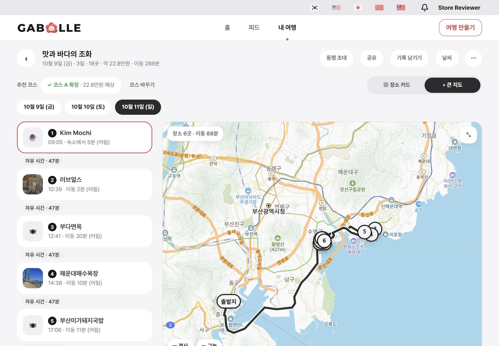
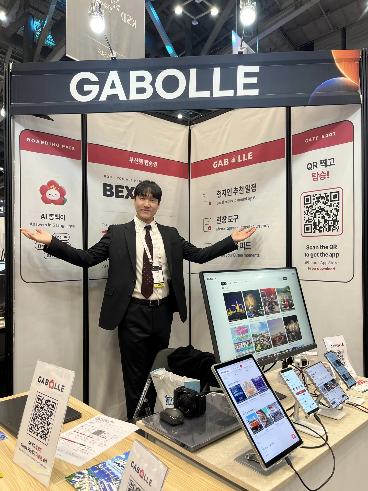
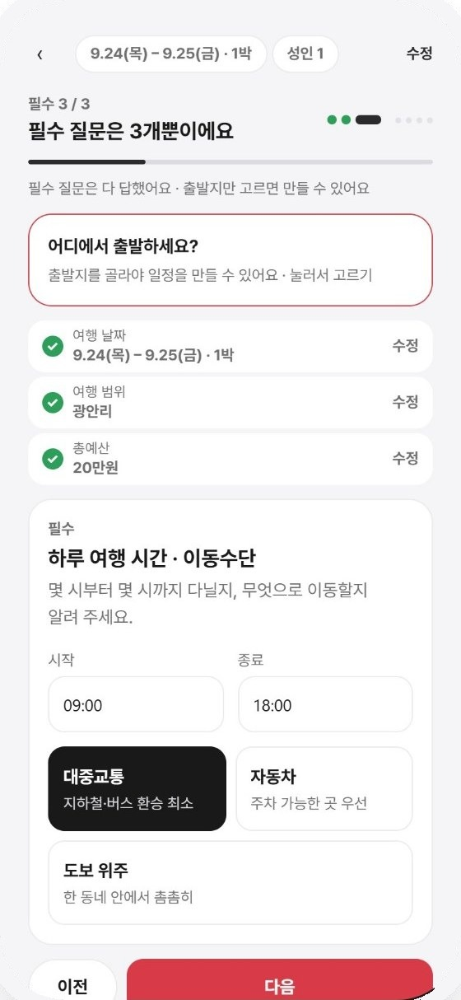
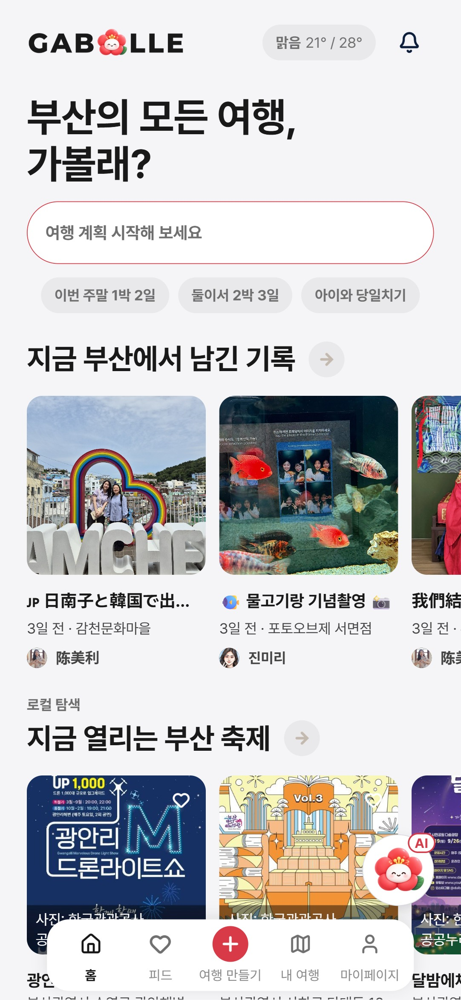

01
로그아웃을 즉시 반영하는 인증 구조
토큰 유효기간이 남아 있어도 로그아웃한 사용자의 접근은 막아야 했습니다. 요청마다 서버 세션을 확인하고, 갱신 토큰 재사용도 탐지해 차단했습니다. 웹에는 HttpOnly Cookie로, 모바일에는 JSON으로 토큰을 전달했습니다.
Spring Security · JWT · 서버 세션
부산 여행을 취향과 조건에 맞추는 서비스
취향과 이동·식단·접근성 조건을 입력하면 부산 여행 코스를 추천합니다. 추천받은 일정을 편집하고, 여행 중 남긴 기록을 동행자나 다른 사용자와 공유할 수 있습니다.
장소와 경로 조회 API를 구현하고 외부 경로 서비스와 연동했습니다.

| 기능 | 직접 구현한 API와 처리 |
|---|---|
| 인증·사용자 | 이메일·소셜 로그인, 토큰 갱신, 로그아웃과 사용자·세션 관리 |
| 여행·추천 작업 | 여행 생성·목록·상세·삭제, 조건 저장과 추천 접수·상태·결과 조회 |
| 장소·경로 | 장소 조회, 두 좌표 사이의 경로 조회와 외부 경로 연동 |
| 기록·피드 | 여행 기록 생성·조회·수정·삭제, 미디어 저장, 피드·팔로우 |
| 동행·공유 | 동행 초대, 여행 공유와 공유 여행 복제 |
토큰 유효기간이 남아 있어도 로그아웃한 사용자의 접근은 막아야 했습니다. 요청마다 서버 세션을 확인하고, 갱신 토큰 재사용도 탐지해 차단했습니다. 웹에는 HttpOnly Cookie로, 모바일에는 JSON으로 토큰을 전달했습니다.
여행 기록과 미디어, 피드·팔로우를 구현했습니다. 글과 사용자·여행 관계는 DB에, 미디어 파일은 별도로 저장했습니다. 파일 저장 방식을 바꿔도 기록 처리 코드에 영향이 덜 가도록 공통 인터페이스(StoragePort)로 Local/S3 구현을 분리했습니다. 동행 초대, 여행 공유와 복제 API도 연결했습니다.
장소를 고르고 이동 경로를 계산하는 동안 아무 응답이 없으면 사용자는 요청이 접수됐는지 알기 어렵습니다. 여행 조건을 저장한 뒤 접수 응답(HTTP 202)과 작업 번호를 먼저 보내고, 추천 계산은 같은 백엔드 안의 별도 실행기에 넘겼습니다. 화면은 서버가 보내는 진행 상태(SSE)를 받아 표시하고, 같은 작업 번호로 결과를 조회합니다. 요청을 다시 보내도 여행이 두 번 생성되지 않도록 처리했습니다.
화면이 날짜·예산·이동 조건과 취향을 보내면 여행 정보와 조건을 저장하고, 계산이 끝나기 전에 작업 번호(jobId)를 먼저 돌려줍니다.
첫 여행을 만드는 사용자에게는 추천에 활용할 이용 이력이 없습니다. 출시 전 180명에게 직접 설문을 받아 초기 추천에 필요한 데이터를 마련했습니다. 앱 출시 후에는 FLY ASIA 창업박람회에서 투자자와 사용자에게 서비스를 시연했습니다.

현장에서 받은 피드백을 반영해 지도에서 여행 경로를 더 잘 보이게 하고, 여행 생성에 필요 없는 입력을 덜었습니다. 자주 쓰는 기능을 두 단계 안에서 찾을 수 있는지도 화면별로 점검했습니다.

여행 생성 화면

앱 홈 화면
서버 API는 응답했지만 배포된 웹에서는 소셜 로그인 화면이 열리지 않았습니다. 브라우저가 내려받은 JavaScript를 확인하니 OAuth 클라이언트 ID가 비어 있고 API 주소는 localhost로 들어가 있었습니다. 웹을 빌드할 때 필요한 설정이 전달되도록 배포 파이프라인을 수정하고, 인증 뒤 돌아올 화면의 경로를 추가했습니다. 다시 배포한 웹에서 네이버 동의 화면부터 토큰 교환까지 확인했습니다.